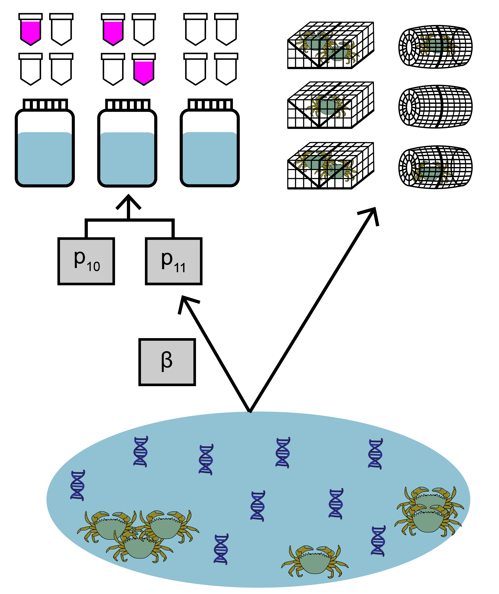
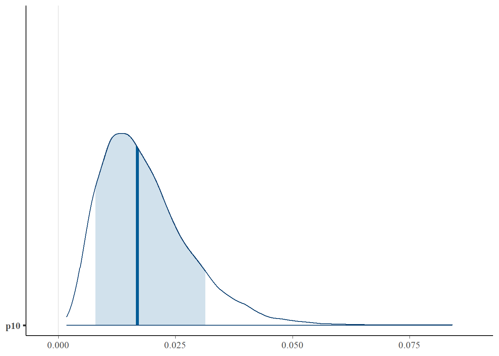
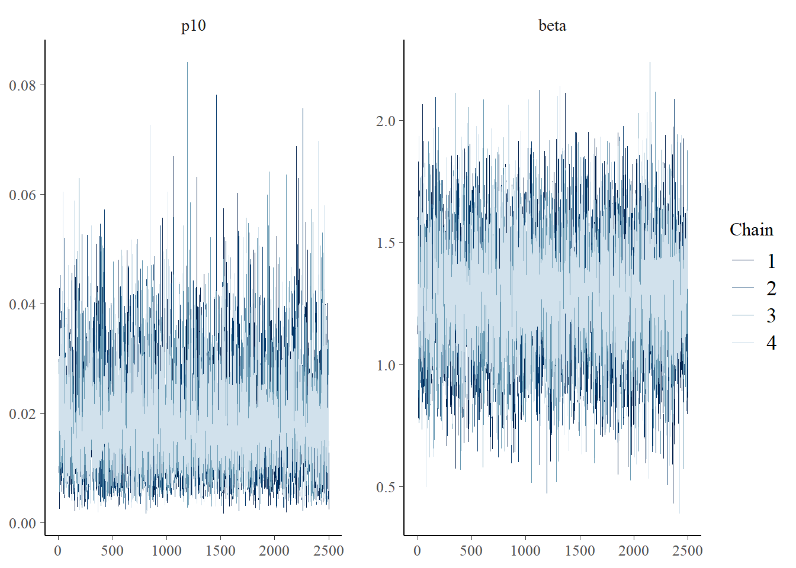
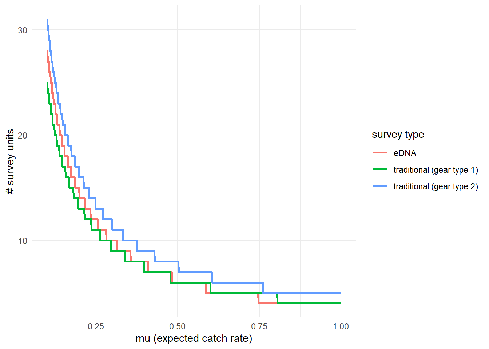

Chapter 5 Use case 3: jointModel() with multiple traditional gear types
This third use case will show how to fit and interpret the joint model with paired eDNA and traditional survey data when multiple traditional gear types have been used. These different gear types may have different expected catch rates, \(\mu\), represented by gear-specific scaling coefficients q.

The data used in this example comes from a study by Keller et al. (2022) about invasive European green crab (Carcinus maenas) in Washington state. Environmental DNA samples were collected at 20 sites, along with paired baited trap sampling. The eDNA data is detection/non-detection data generated through quantitative polymerase chain reaction (qPCR).
5.1 Prepare the data
Similar to the goby data, the green crab data is still a list of matrices. Now, instead of data on site-level covariates, site.cov, there is data representing the gear type for each of the traditional samples, count.type.
## [1] "qPCR.N" "qPCR.K" "count" "count.type"Again, all matrices should have the same number of rows (n=20), and rows across all four matrices should correspond to the same sites.
Let’s look at the count. This data is from baited trap sampling for green crab. Each integer refers to the catch of each trap (i.e., catch per unit effort, when effort = 1). The rows correspond to sites, and the columns refer to the replicated trap samples (secondary sample units) at each site, with a maximum of 420 samples.
## [1] 20 420Blank spaces are filled with NA at sites where fewer trap samples were collected than the maximum. In this example, the count data are integers, but continuous values can be used in the model (see Eq. 1.3 in the model description).
## 1 2 3 4 5 6 7 8 9 10 11 12 13 14 15 16 17 18 19 20
## [1,] 0 0 0 0 0 0 0 0 0 0 0 0 0 0 0 0 0 0 0 0
## [2,] 0 0 0 0 0 0 0 0 0 0 0 0 0 0 0 0 0 0 0 0
## [3,] 0 0 0 0 0 0 0 0 0 0 0 0 0 0 0 0 0 0 0 0
## [4,] 1 0 1 2 0 0 0 0 0 0 0 0 0 0 0 2 0 0 0 1
## [5,] 0 0 0 0 0 0 0 0 NA NA NA NA NA NA NA NA NA NA NA NA
## [6,] 0 0 0 0 0 0 NA NA NA NA NA NA NA NA NA NA NA NA NA NANext, let’s look at count.type, which consists of integer indicators of gear type for each trap sample. Here, 1 refers to the Fukui gear type, and 2 refers to the Minnow gear type.
## 1 2 3 4 5 6 7 8 9 10 11 12 13 14 15 16 17 18 19 20
## [1,] 1 1 1 1 2 1 2 2 2 2 2 2 1 1 1 1 2 1 1 2
## [2,] 2 2 2 2 2 2 2 2 2 1 1 1 1 1 1 1 2 2 2 2
## [3,] 1 1 1 2 1 2 1 1 1 2 1 2 2 1 2 2 1 2 1 2
## [4,] 2 2 2 2 2 2 2 2 1 2 2 2 2 2 2 2 2 2 2 2
## [5,] 1 2 1 2 1 2 1 2 NA NA NA NA NA NA NA NA NA NA NA NA
## [6,] 2 1 2 1 2 1 NA NA NA NA NA NA NA NA NA NA NA NA NA NANote that the locations of the NAs in this matrix match count.
For more data formatting guidance, see section 2.1.1.
5.2 Fit the model
Now that we understand our data, let’s fit the joint model. The key arguments of this function include:
- data: list of
qPCR.K,qPCR.N,count, andcount.typematrices - cov: no site-level covariates are included in this model
- family: probability distribution used to model the trap count data. A negative binomial distribution is chosen here.
- p10priors: Beta distribution parameters for the prior on the probability of false positive eDNA detection, \(p_{10}\). c(1,20) is the default specification.
- q: logical value indicating the presence of multiple traditional gear types.
More parameters exist to further customize the MCMC sampling, but we’ll stick with the defaults.
5.3 Model selection
We previously made a choice to model the green crab count data with a negative binomial distribution. Perhaps we want to test how that model specification compares to a model specification where count data is modeled with a poisson distribution.
# run the joint model with poisson distribution
greencrab.fit.q.pois <- jointModel(data = greencrabData, cov=NULL, family = 'poisson',
p10priors = c(1,20), q=TRUE)Let’s also fit some models where we assume that both gear types have the same catchability. We set q=FALSE to not estimate gear scaling coefficients.
# run the joint model with four covariates
greencrab.fit.negbin <- jointModel(data = greencrabData, cov=NULL, family = 'negbin',
p10priors = c(1,20), q=FALSE)
greencrab.fit.pois <- jointModel(data = greencrabData, cov=NULL, family = 'poisson',
p10priors = c(1,20), q=FALSE)Now let’s perform model selection using leave-one-out cross validation.
# perform model selection
jointSelect(modelfits = list(
# include gear scaling coefficient, model count data with negative binomial
greencrab.fit.q.negbin$model,
# include gear scaling coefficient, model count data with poisson
greencrab.fit.q.pois$model,
# include gear scaling coefficient, model count data with negative binomial
greencrab.fit.negbin$model,
# include gear scaling coefficient, model count data with poisson
greencrab.fit.pois$model)) ## elpd_diff se_diff
## model3 0.0 0.0
## model1 -1.0 1.9
## model4 -165.9 38.4
## model2 -168.5 37.7These results tell us that models one and three (models with and without gear scaling coefficients for the gear types) that use a negative binomial distribution for count data have similar Bayesian LOO estimates of the expected log pointwise predictive density (elpd_loo). Notably, a negative binomial distribution represents the data-generating process for our count data much better than a poisson distribution.
5.4 Interpret the output
5.4.1 Summarize posterior distributions
For the sake of illustration, let’s interpret the results of the model fit with gear scaling coefficients. Use jointSummarize() to see the posterior summaries of the model parameters.
## mean se_mean sd 2.5% 97.5% n_eff Rhat
## p10 0.019 0.000 0.010 0.005 0.041 10842.124 1
## beta 1.265 0.003 0.245 0.800 1.767 8633.901 1
## q[1] 0.795 0.001 0.101 0.611 1.006 6699.013 1This summarizes the mean, sd, and quantiles of the posterior estimates of \(p_{10}\), \(\beta\), and q, as well as the effective sample size (n_eff) and Rhat for the parameters.
The mean estimated probability of a false positive eDNA detection is ~0.01. beta is the parameter that scales the sensitivity of eDNA sampling relative to trap sampling. q[1] represents the gear scaling coefficient of gear type 2, which scales the catch rate of gear type 2 relative to gear type 1.
Now let’s look at the summary of mu.
## mean se_mean sd 2.5% 97.5% n_eff Rhat
## mu[1,1] 0.107 0.000 0.028 0.060 0.169 12092.729 1
## mu[1,2] 0.084 0.000 0.023 0.047 0.136 13041.050 1
## mu[2,1] 0.032 0.000 0.034 0.001 0.124 13058.609 1
## mu[2,2] 0.026 0.000 0.027 0.001 0.098 13179.902 1
## mu[3,1] 0.017 0.000 0.017 0.000 0.063 12227.341 1
## mu[3,2] 0.014 0.000 0.014 0.000 0.051 12585.700 1
## mu[4,1] 0.678 0.001 0.105 0.497 0.912 10471.339 1
## mu[4,2] 0.535 0.001 0.090 0.380 0.730 12571.650 1
## mu[5,1] 0.100 0.001 0.107 0.002 0.389 13321.944 1
## mu[5,2] 0.079 0.001 0.085 0.002 0.311 13236.365 1
## mu[6,1] 0.120 0.001 0.131 0.003 0.489 12253.316 1
## mu[6,2] 0.094 0.001 0.103 0.003 0.381 12425.582 1
## mu[7,1] 0.013 0.000 0.013 0.000 0.046 12839.668 1
## mu[7,2] 0.010 0.000 0.010 0.000 0.037 12726.795 1
## mu[8,1] 0.304 0.003 0.286 0.013 1.079 12499.904 1
## mu[8,2] 0.240 0.002 0.227 0.010 0.840 12691.972 1
## mu[9,1] 0.033 0.000 0.032 0.001 0.120 12449.077 1
## mu[9,2] 0.026 0.000 0.026 0.001 0.095 12803.333 1
## mu[10,1] 1.045 0.002 0.245 0.644 1.599 10223.025 1
## mu[10,2] 0.824 0.002 0.191 0.503 1.250 12519.448 1
## mu[11,1] 0.302 0.003 0.286 0.013 1.072 12011.363 1
## mu[11,2] 0.238 0.002 0.227 0.010 0.837 12166.721 1
## mu[12,1] 0.021 0.000 0.022 0.000 0.081 12903.994 1
## mu[12,2] 0.017 0.000 0.017 0.000 0.063 12735.318 1
## mu[13,1] 7.668 0.014 1.318 5.509 10.646 8913.679 1
## mu[13,2] 6.034 0.008 0.974 4.411 8.168 13198.043 1
## mu[14,1] 0.119 0.000 0.020 0.084 0.161 10068.020 1
## mu[14,2] 0.094 0.000 0.016 0.065 0.128 12414.486 1
## mu[15,1] 0.766 0.005 0.541 0.124 2.174 12110.728 1
## mu[15,2] 0.604 0.004 0.426 0.099 1.726 12547.477 1
## mu[16,1] 3.796 0.007 0.659 2.672 5.261 8987.115 1
## mu[16,2] 2.984 0.004 0.469 2.171 4.008 14528.663 1
## mu[17,1] 0.163 0.002 0.181 0.004 0.639 13027.682 1
## mu[17,2] 0.129 0.001 0.143 0.003 0.503 13105.373 1
## mu[18,1] 3.315 0.011 1.099 1.751 5.926 9633.229 1
## mu[18,2] 2.615 0.008 0.872 1.371 4.770 10895.124 1
## mu[19,1] 3.927 0.008 0.712 2.761 5.546 8701.826 1
## mu[19,2] 3.097 0.005 0.567 2.169 4.381 11502.035 1
## mu[20,1] 0.119 0.001 0.069 0.026 0.292 12473.216 1
## mu[20,2] 0.094 0.000 0.055 0.020 0.226 12503.220 1mu[1,1] corresponds to the expected catch rate at site 1 with gear type 1. mu[1,2] corresponds to the expected catch rate at site 1 with gear type 2. mu[2,1] corresponds to the expected catch rate at site 2 with gear type 1.
We can also use functions from the bayesplot package to examine the posterior distributions and chain convergence.
First let’s look at the posterior distribution for \(p_{10}\).
library(bayesplot)
# plot posterior distribution, highlighting median and 80% credibility interval
mcmc_areas(as.matrix(greencrab.fit.q.negbin$model), pars = 'p10', prob = 0.8)
Next let’s look at chain convergence for \(p_{10}\) and \(\beta\).
# this will plot the MCMC chains for p10 and mu at site 1
mcmc_trace(rstan::extract(greencrab.fit.q.negbin$model, permuted = FALSE),
pars = c('p10', 'beta'))
5.4.2 Effort necessary to detect presence
To further highlight these results, we can use detectionCalculate() to find the units of survey effort necessary to detect presence of the species. This function is finding the median number of survey units necessary to detect species presence if the expected catch rate, \(\mu\) is 0.1, 0.5, or 1. \(\mu\) now represents the expected catch rate of gear type 1.
## mu n_traditional_1 n_traditional_2 n_eDNA
## [1,] 0.1 25 31 28
## [2,] 0.5 6 8 6
## [3,] 1.0 4 5 4We can see that it takes 27 eDNA samples, 25 trap samples (gear type 1), and 31 trap samples (gear type 2) to detect green crab presence with 0.9 probability if the expected catch rate with gear type 1 is 0.1.
We can also plot these comparisons. mu.min and mu.max define the x-axis in the plot and represent the expected catch rate of gear type 1.

5.4.3 Calculate \(\mu_{critical}\)
Now let’s calculate \(\mu_{critical}\), which is the value of \(\mu\) where the probability of a false positive eDNA detection equals the probability of a true positive eDNA detection.
## gear_1 gear_2
## median 0.06008454 0.047477497
## lower_ci 0.01024929 0.007951609
## upper_ci 0.13458086 0.105297563This function calculates \(\mu_{critical}\) using the entire posterior distributions of parameters from the model, and ‘HDI’ corresponds to the 90% credibility interval calculated using the highest density interval. The first column corresponds to \(\mu_{critical}\) if gear type 1 is used, and the second columns corresponds to \(\mu_{critical}\) if gear type 2 is used.
5.5 traditionalModel()
In some circumstances, it may be helpful to model just the traditional survey data without eDNA data for comparison. Use traditionalModel here, which requires the following parameters:
- data: list of
countand (optionally)count.typematrices - family: probability distribution used to model the trap count data. A negative binomial distribution is chosen here.
- q: logical value indicating the presence of multiple traditional gear types.
More parameters exist to further customize the MCMC sampling, but we’ll stick with the defaults.
5.6 Initial values
By default, eDNAjoint will provide initial values for parameters estimated by the model, but you can provide your own initial values if you prefer. Here is an example of providing initial values for parameters, mu,p10, beta, and q, as an input in jointModel().
# set number of chains
n.chain <- 4
# initial values should be a list of named lists
inits <- list()
for(i in 1:n.chain){
inits[[i]] <- list(
# length should equal the number of sites (dim(greencrabData$count)[1]) for each chain
mu = stats::runif(dim(greencrabData$count)[1], 0.01, 5),
# length should equal 1 for each chain
p10 = stats::runif(1,0.0001,0.08),
# length should equal 1 for each chain
beta = stats::runif(1,0.05,0.2),
# length should equal the number of gear types - 1
q = stats::runif(
sum(!is.na(unique(as.vector(greencrabData$count.type))))-1,
0.5, 1.5
)
)
}
# now fit the model
fit.w.inits <- jointModel(data = greencrabData,
q = TRUE, initial_values = inits)##
## SAMPLING FOR MODEL 'joint_binary_catchability_pois' NOW (CHAIN 1).
## Chain 1:
## Chain 1: Gradient evaluation took 0.004588 seconds
## Chain 1: 1000 transitions using 10 leapfrog steps per transition would take 45.88 seconds.
## Chain 1: Adjust your expectations accordingly!
## Chain 1:
## Chain 1:
## Chain 1: Iteration: 1 / 3000 [ 0%] (Warmup)
## Chain 1: Iteration: 500 / 3000 [ 16%] (Warmup)
## Chain 1: Iteration: 501 / 3000 [ 16%] (Sampling)
## Chain 1: Iteration: 1000 / 3000 [ 33%] (Sampling)
## Chain 1: Iteration: 1500 / 3000 [ 50%] (Sampling)
## Chain 1: Iteration: 2000 / 3000 [ 66%] (Sampling)
## Chain 1: Iteration: 2500 / 3000 [ 83%] (Sampling)
## Chain 1: Iteration: 3000 / 3000 [100%] (Sampling)
## Chain 1:
## Chain 1: Elapsed Time: 4.498 seconds (Warm-up)
## Chain 1: 10.422 seconds (Sampling)
## Chain 1: 14.92 seconds (Total)
## Chain 1:
##
## SAMPLING FOR MODEL 'joint_binary_catchability_pois' NOW (CHAIN 2).
## Chain 2:
## Chain 2: Gradient evaluation took 0.00054 seconds
## Chain 2: 1000 transitions using 10 leapfrog steps per transition would take 5.4 seconds.
## Chain 2: Adjust your expectations accordingly!
## Chain 2:
## Chain 2:
## Chain 2: Iteration: 1 / 3000 [ 0%] (Warmup)
## Chain 2: Iteration: 500 / 3000 [ 16%] (Warmup)
## Chain 2: Iteration: 501 / 3000 [ 16%] (Sampling)
## Chain 2: Iteration: 1000 / 3000 [ 33%] (Sampling)
## Chain 2: Iteration: 1500 / 3000 [ 50%] (Sampling)
## Chain 2: Iteration: 2000 / 3000 [ 66%] (Sampling)
## Chain 2: Iteration: 2500 / 3000 [ 83%] (Sampling)
## Chain 2: Iteration: 3000 / 3000 [100%] (Sampling)
## Chain 2:
## Chain 2: Elapsed Time: 4.611 seconds (Warm-up)
## Chain 2: 11.633 seconds (Sampling)
## Chain 2: 16.244 seconds (Total)
## Chain 2:
##
## SAMPLING FOR MODEL 'joint_binary_catchability_pois' NOW (CHAIN 3).
## Chain 3:
## Chain 3: Gradient evaluation took 0.000255 seconds
## Chain 3: 1000 transitions using 10 leapfrog steps per transition would take 2.55 seconds.
## Chain 3: Adjust your expectations accordingly!
## Chain 3:
## Chain 3:
## Chain 3: Iteration: 1 / 3000 [ 0%] (Warmup)
## Chain 3: Iteration: 500 / 3000 [ 16%] (Warmup)
## Chain 3: Iteration: 501 / 3000 [ 16%] (Sampling)
## Chain 3: Iteration: 1000 / 3000 [ 33%] (Sampling)
## Chain 3: Iteration: 1500 / 3000 [ 50%] (Sampling)
## Chain 3: Iteration: 2000 / 3000 [ 66%] (Sampling)
## Chain 3: Iteration: 2500 / 3000 [ 83%] (Sampling)
## Chain 3: Iteration: 3000 / 3000 [100%] (Sampling)
## Chain 3:
## Chain 3: Elapsed Time: 4.064 seconds (Warm-up)
## Chain 3: 7.981 seconds (Sampling)
## Chain 3: 12.045 seconds (Total)
## Chain 3:
##
## SAMPLING FOR MODEL 'joint_binary_catchability_pois' NOW (CHAIN 4).
## Chain 4:
## Chain 4: Gradient evaluation took 0.00016 seconds
## Chain 4: 1000 transitions using 10 leapfrog steps per transition would take 1.6 seconds.
## Chain 4: Adjust your expectations accordingly!
## Chain 4:
## Chain 4:
## Chain 4: Iteration: 1 / 3000 [ 0%] (Warmup)
## Chain 4: Iteration: 500 / 3000 [ 16%] (Warmup)
## Chain 4: Iteration: 501 / 3000 [ 16%] (Sampling)
## Chain 4: Iteration: 1000 / 3000 [ 33%] (Sampling)
## Chain 4: Iteration: 1500 / 3000 [ 50%] (Sampling)
## Chain 4: Iteration: 2000 / 3000 [ 66%] (Sampling)
## Chain 4: Iteration: 2500 / 3000 [ 83%] (Sampling)
## Chain 4: Iteration: 3000 / 3000 [100%] (Sampling)
## Chain 4:
## Chain 4: Elapsed Time: 5.36 seconds (Warm-up)
## Chain 4: 7.099 seconds (Sampling)
## Chain 4: 12.459 seconds (Total)
## Chain 4:
## Refer to the eDNAjoint guide for visualization tips: https://bookdown.org/abigailkeller/eDNAjoint_vignette/tips.html#visualization-tips## $chain1
## $chain1$mu_trad_1
## [1] 4.0780805 1.6461503 1.8409625 3.8067218 4.8467818 4.9285195 4.9491822 2.6502479
## [9] 1.7250343 4.7976077 3.8983880 0.6046407 1.7905315 3.2753873 3.6891999 0.9293645
## [17] 1.8348874 3.5736912 2.1752346 4.3831472
##
## $chain1$mu
## [1] 4.0780805 1.6461503 1.8409625 3.8067218 4.8467818 4.9285195 4.9491822 2.6502479
## [9] 1.7250343 4.7976077 3.8983880 0.6046407 1.7905315 3.2753873 3.6891999 0.9293645
## [17] 1.8348874 3.5736912 2.1752346 4.3831472
##
## $chain1$log_p10
## [1] -3.650117
##
## $chain1$beta
## [1] 0.08127231
##
## $chain1$q_trans
## initial_values[[i]]$q
## 1 0.601305
##
##
## $chain2
## $chain2$mu_trad_1
## [1] 1.4338101 2.5878397 2.8904753 2.7515258 0.9257917 3.3239880 0.4693585 4.9146158
## [9] 0.2296816 3.2920709 4.7342723 4.4256445 0.5334799 1.5910902 4.5501773 3.0226411
## [17] 0.2046510 3.9737262 1.3052055 2.0850422
##
## $chain2$mu
## [1] 1.4338101 2.5878397 2.8904753 2.7515258 0.9257917 3.3239880 0.4693585 4.9146158
## [9] 0.2296816 3.2920709 4.7342723 4.4256445 0.5334799 1.5910902 4.5501773 3.0226411
## [17] 0.2046510 3.9737262 1.3052055 2.0850422
##
## $chain2$log_p10
## [1] -3.596207
##
## $chain2$beta
## [1] 0.05520817
##
## $chain2$q_trans
## initial_values[[i]]$q
## 1 0.7872615
##
##
## $chain3
## $chain3$mu_trad_1
## [1] 4.8505518 4.0163179 0.8375390 3.9024871 4.8707274 4.8644647 4.3380319 1.6399283
## [9] 4.1358120 4.8363555 1.4619399 1.1389638 4.9408612 1.4267285 3.9601021 4.6860420
## [17] 1.7089668 0.8324854 1.2504033 0.7275175
##
## $chain3$mu
## [1] 4.8505518 4.0163179 0.8375390 3.9024871 4.8707274 4.8644647 4.3380319 1.6399283
## [9] 4.1358120 4.8363555 1.4619399 1.1389638 4.9408612 1.4267285 3.9601021 4.6860420
## [17] 1.7089668 0.8324854 1.2504033 0.7275175
##
## $chain3$log_p10
## [1] -3.799006
##
## $chain3$beta
## [1] 0.1855994
##
## $chain3$q_trans
## initial_values[[i]]$q
## 1 0.5643277
##
##
## $chain4
## $chain4$mu_trad_1
## [1] 2.7554272 4.0679301 0.1415597 4.3108366 0.1804336 4.6816822 4.4900137 2.9730838
## [9] 0.1707672 3.6851893 1.6473768 1.9190297 4.9792169 0.7193204 0.7521687 2.7401448
## [17] 2.4927889 1.0740960 4.6347019 3.2124127
##
## $chain4$mu
## [1] 2.7554272 4.0679301 0.1415597 4.3108366 0.1804336 4.6816822 4.4900137 2.9730838
## [9] 0.1707672 3.6851893 1.6473768 1.9190297 4.9792169 0.7193204 0.7521687 2.7401448
## [17] 2.4927889 1.0740960 4.6347019 3.2124127
##
## $chain4$log_p10
## [1] -2.790357
##
## $chain4$beta
## [1] 0.1484974
##
## $chain4$q_trans
## initial_values[[i]]$q
## 1 1.232433